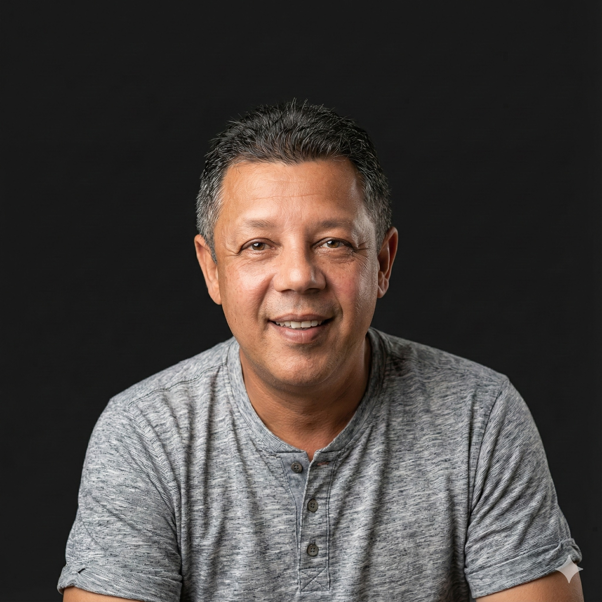

ALMIR DA
EXATUS



Almir Rogério
Contabilidade e Desenvolvimento local
Almir Rogério dos Santos, conhecido como Almir da Exatus, é contador, empreendedor e candidato a deputado. Carrega 25 anos de atuação em gestão e contabilidade, formando uma história guiada por dedicação, ética, compromisso e um olhar firme para fazer a diferença em São Paulo.
Almir Rogério